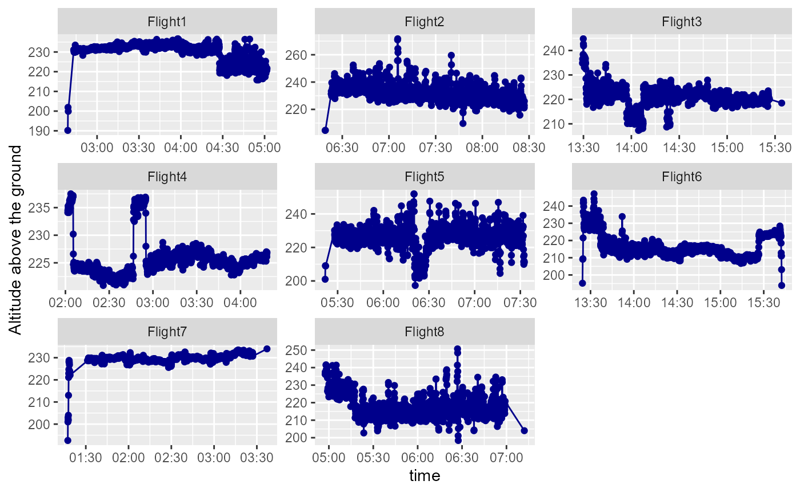

Flight summaries
Flight_summaries.RmdGather all the Flights in to a single dataset
library(here)
#here::here()
path=paste0(here::here(),"/", "data/tables")
#list.files(path)
all_dfs=Kulan::get_tables(path, ".csv")
all_dfs=all_dfs %>%
janitor::clean_names() %>%
rename(., Flight = class)Draw the flight paths
all_dfs %>%
ggplot(aes(lat_dec,lon_dec, colour=Flight))+
geom_line()+
labs(x="Decimal Latitude", y="Decimal Longitude")+
facet_wrap(~Flight, scales = "free") +
theme_bw()At this point you could add the altitude from the DEM [see the “Getting raster values form a Digital Elevation Model” vignette]. Here, for this example, we will use the column called Altitude above the ground (because we can not include all the DEMs we would need inside the package).
Strip-width summary
| Flight1 (N = 1676) | Flight2 (N = 1504) | Flight3 (N = 1410) | Flight4 (N = 1641) | Flight5 (N = 1511) | Flight6 (N = 1915) | Flight7 (N = 1457) | Flight8 (N = 1536) | |
|---|---|---|---|---|---|---|---|---|
| strip width | ||||||||
| min | 0 | 0 | 0 | 0 | 0 | 0 | 0 | 0 |
| max | 524 | 601 | 542 | 526 | 558 | 547 | 517 | 555 |
| mean (sd) | 507.03 ± 30.24 | 510.31 ± 33.86 | 487.41 ± 24.32 | 498.69 ± 22.67 | 497.23 ± 34.76 | 466.91 ± 57.79 | 505.49 ± 31.57 | 480.59 ± 25.87 |
Remove points where the drone is in take-off or landing
First plot the data
all_dfs %>%
ggplot(aes(time, alt_above_ground, colour=Flight)) +
labs(y= "Altitude above sea level")+
theme(axis.text.x = element_blank())+
geom_point()+
theme(legend.position = "None")+
facet_wrap(~Flight)## Warning: Removed 25 rows containing missing values (geom_point).
From the distribution of the altitudes we can see that anything below 200 m is probably take-off or landing phase.
all_dfs %>%
ggplot(aes(alt_above_ground))+
geom_histogram(fill="Red")## `stat_bin()` using `bins = 30`. Pick better value with `binwidth`.## Warning: Removed 25 rows containing non-finite values (stat_bin).
However, we might want to look more closely at Flight5 as it seems some of the points during the flight are below 200m.
all_dfs %>%
filter(Flight=="Flight5") %>%
ggplot(aes(time, alt_above_ground, colour=Flight)) +
labs(y= "Altitude above sea level")+
theme(axis.text.x = element_blank())+
geom_point()+
geom_hline(yintercept = 200, colour="Red", lty=2) +
geom_hline(yintercept = 190, colour="Green", lty=2) +
theme(legend.position = "None")## Warning: Removed 4 rows containing missing values (geom_point).
So a couple of points in Flight5 during the actual flight were below our threshold of 200m. So let’s be conservative and go for 190m instead.
all_dfs_reduced=all_dfs %>%
filter(alt_above_ground>190)Now all the points in consideration are above 190m.Let’s re-run the strip-width summary.
| Flight1 (N = 1665) | Flight2 (N = 1491) | Flight3 (N = 1407) | Flight4 (N = 1638) | Flight5 (N = 1498) | Flight6 (N = 1820) | Flight7 (N = 1443) | Flight8 (N = 1533) | |
|---|---|---|---|---|---|---|---|---|
| strip width | ||||||||
| min | 421 | 453 | 459 | 489 | 437 | 429 | 426 | 439 |
| max | 524 | 601 | 542 | 526 | 558 | 547 | 517 | 555 |
| mean (sd) | 509.16 ± 10.28 | 512.94 ± 13.33 | 488.45 ± 9.21 | 499.60 ± 7.65 | 499.89 ± 14.98 | 478.54 ± 13.78 | 508.24 ± 5.20 | 481.53 ± 14.74 |
Speed summary
Using the gps_speed we can plot the speed of the drone during each flight.
all_dfs_reduced%>%
mutate(rowid=row_number()) %>%
mutate(time=as.POSIXct(time,format="%H:%M:%S")) %>%
ggplot(aes(time,gps_speed,colour=alt_above_ground))+
geom_point()+
geom_line()+
facet_wrap(~Flight, scales="free")Distance between points summary
There are some very large distances moved at the start or the end of a Flight and these need to be filtered out to allow us to plot the distance more clearly. Anything above 250m is therefore removed in the plotting code below.The points are coloured by the gps_speed.
distance_df=all_dfs_reduced%>%
group_by(Flight) %>%
mutate(new_lat=lag(lat_dec)) %>%
mutate(new_lon=lag(lon_dec)) %>%
rowwise() %>%
mutate(coord_dif=distm(c(lon_dec, lat_dec), c(new_lon, new_lat), fun = distHaversine))
distance_df %>%
group_by(Flight) %>%
mutate(time=as.POSIXct(time,format="%H:%M:%S")) %>%
filter(coord_dif<250) %>%
ggplot(aes(time,coord_dif,colour=gps_speed))+
geom_point()+
geom_line()+
scale_colour_gradientn(colours = terrain.colors(10))+
labs(y="distance (m) between points")+
facet_wrap(~Flight, scales="free")
Overlap
The forward overlap is the percentage overlap that two consecutive images have.
over=distance_df %>%
group_by(Flight) %>%
rowwise() %>%
mutate(overlap=Kulan::oforward( dforwar=coord_dif[,1],H=alt_above_ground ))
over %>%
mutate(overlap=ifelse(overlap<0,0,overlap)) %>% # this makes any overlap less than 0 == 0
ggplot(aes(overlap)) +
geom_histogram(fill="blue")+
facet_wrap(~Flight)## `stat_bin()` using `bins = 30`. Pick better value with `binwidth`.## Warning: Removed 8 rows containing non-finite values (stat_bin).The mean overlap per Flight is
over %>%
mutate(overlap=ifelse(overlap<0,0,overlap)) %>% # this makes any overlap less than 0 == 0
group_by(Flight) %>%
summarise(mnOver=mean(overlap, na.rm=TRUE))## # A tibble: 8 x 2
## Flight mnOver
## * <chr> <dbl>
## 1 Flight1 22.9
## 2 Flight2 23.7
## 3 Flight3 21.1
## 4 Flight4 21.9
## 5 Flight5 22.8
## 6 Flight6 26.6
## 7 Flight7 28.3
## 8 Flight8 28.7Ground surface resolution
NEED TO TEST THIS FUNCTION
GSR_all_dfs=all_dfs_reduced %>%
rowwise() %>%
mutate("GSR"=get_GSD_dist(Altitude = alt_above_ground, Angle = banking_angle))
df=GSR_all_dfs %>%
group_by(Flight) %>%
group_split()
data.frame("Flight"=c("Flight1","Flight2","Flight3","Flight4","Flight5","Flight6","Flight7","Flight8"), "GSDh"= c(mean(df[[1]]$GSR$GSDh),mean(df[[2]]$GSR$GSDh),mean(df[[3]]$GSR$GSDh),mean(df[[4]]$GSR$GSDh),mean(df[[5]]$GSR$GSDh),mean(df[[6]]$GSR$GSDh),mean(df[[7]]$GSR$GSDh),mean(df[[8]]$GSR$GSDh)),"GSDw"= c(mean(df[[1]]$GSR$GSDw),mean(df[[2]]$GSR$GSDw),mean(df[[3]]$GSR$GSDw),mean(df[[4]]$GSR$GSDw),mean(df[[5]]$GSR$GSDw),mean(df[[6]]$GSR$GSDw),mean(df[[7]]$GSR$GSDw),mean(df[[8]]$GSR$GSDw)))## Flight GSDh GSDw
## 1 Flight1 2.974120 2.892960
## 2 Flight2 2.996172 2.914411
## 3 Flight3 2.853114 2.775256
## 4 Flight4 2.918282 2.838646
## 5 Flight5 2.919973 2.840291
## 6 Flight6 2.795217 2.718939
## 7 Flight7 2.968742 2.887729
## 8 Flight8 2.812696 2.735941Area (two sides) of each image
Does not take in to account angle
all_dfs_reduced %>%
mutate(side1=Image_sides(alt_above_ground)$side1) %>%
mutate(side2=Image_sides(alt_above_ground)$side2) %>%
group_by(Flight) %>%
summarise(Side1=mean(side1, na.rm=TRUE), Side2=mean(side2, na.rm=TRUE))## # A tibble: 8 x 3
## Flight Side1 Side2
## * <chr> <dbl> <dbl>
## 1 Flight1 270. 282.
## 2 Flight2 272. 284.
## 3 Flight3 259. 270.
## 4 Flight4 265. 277.
## 5 Flight5 265. 277.
## 6 Flight6 254. 265.
## 7 Flight7 269. 281.
## 8 Flight8 255. 267.